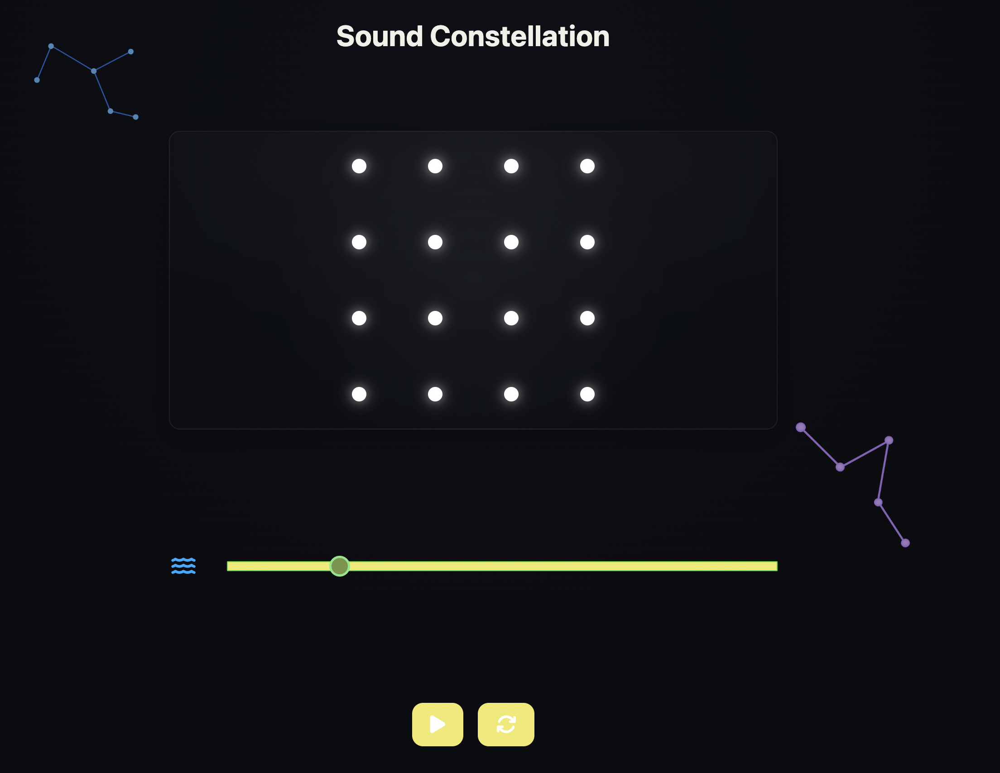
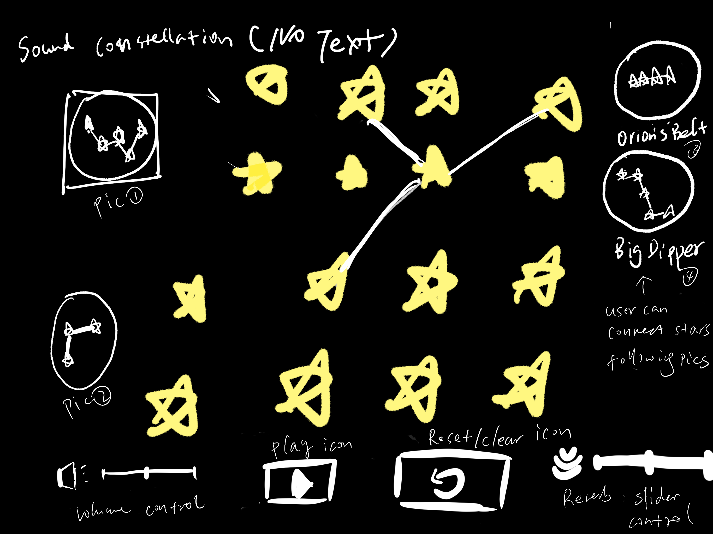
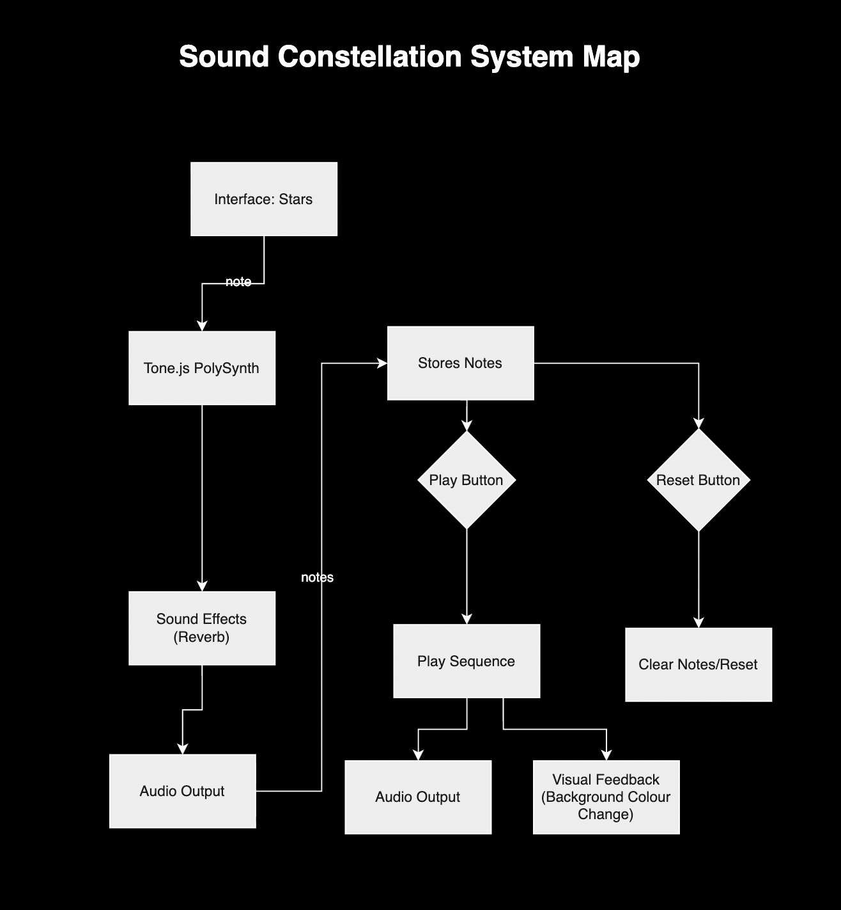

Prototype Demo
You can interact the live Prototype here: Sound Constellation Prototype
Conceptual Response
The project Sound Constellation responds to the creative prompt “No Text Characters”. The idea is to design an interface that allows users to explore sound without relying on text labels. Instead, the project uses stars and constellations as visual metaphors. Users connect stars on a grid to form patterns, and each pattern produces a sequence of musical notes. This method transforms drawing into an act of composition, encouraging exploration through both sight and sound.
The choice of a constellation theme is not only aesthetic but also functional. Stars provide a clear and universal symbol that can guide users without text, while the lines between stars make feedback immediate and intuitive. The interface design relies on simple but effective cues, such as brightness and motion, to signal that an action has been recognised. This ensures that the UI remains accessible and engaging, even for first-time users.
Visual Plan / Sketch
The Visual plan sketches show how stars, playback controls, and sound effects work together as one system. Inspiration comes from projects such as Chrome Music Lab (https://musiclab.chromeexperiments.com/Experiments), which demonstrates how minimal visuals and playful interaction can create meaningful experiences. Sound Constellation applies a similar idea, allowing users to express their creativity by interacting with the interface and generating unique, beautiful sounds.
Technical Approach
The system is built with Tone.js PolySynth as the main sound engine. Each star in the grid is linked to a musical note. When a user clicks on a star, a single note is triggered and stored in an array. By connecting several stars, the user forms a constellation path that represents a sequence of notes.
When the Play button is pressed, the system plays the stored notes one by one. The Math.random() function is applied to introduce a slight variation of each note. This makes every playback sound a little different, which creates a more natural and playful experience. At the same time, the background colour is also changed using Math.random(), so every sequence has a unique visual identity in addition to its sound.
The Reset button clears all stored notes and visual connections, allowing users to start a new constellation.
Peer User Testing & Feedback
Feedback Prompts
- Please try to connect a sequence of stars and then play it back. Without text labels, should you first draw a path and then press the play button? Did the icons for play' and 'reset' make sense to you?
- After pressing play, did the sound and the visuals match what you expected from the constellation you drew? Was the random variation in playback noticeable, and did it make the interaction feel fun or confusing?
- Did the background colour change or other visual effects help you notice that your action was successful? Would you like to add more effects, such as a filter or delay, to make the interaction clearer?
Feedback Received
Feedback Summary
- Controls: Most users found the interface intuitive and easy to understand without text labels. The Play and Reset buttons made sense, although a few users forgot to press Play at first and only connected the stars. Some confusion was mentioned about the slider, which looked like a volume control.
- Sound & Playback: The sounds were described as fun, pleasant, and well-matched to the constellation theme. The reverb effect was appreciated, but the random variation was not always noticed. Some users suggested adding more sound effects (such as delay or filter changes) to make the audio richer.
- Visual Feedback: The background colour change was seen as a fun addition, but not everyone noticed it clearly. A few participants suggested making the connecting lines more obvious or adding extra dynamic effects, like twinkling stars or a galaxy-like background. Others felt the current visuals were already sufficient.
Reflection
The peer feedback provided several useful insights into the strengths and areas for improvement in my project. Most users agreed that the interface was straightforward to understand. They mentioned that connecting stars and pressing the play button was intuitive, even without text labels. This means that the design choice of using only icons for play and reset was successful in supporting the creative prompt of “No Text Characters”.
In addition, some users expressed minor confusion about the slider and its function. While the reverb effect was noticeable, several participants mentioned that the impact was subtle, and they suggested adding clearer or more noticeable effects, such as delay or audio filters. Furthermore, the background change was not always strong enough to indicate success. Some users proposed additional visual feedback, such as brighter connecting lines or twinkling effects, to reinforce the interaction.
Overall, the peer feedback suggests that the main interaction of drawing constellations and hearing them played back works well and creates a playful and engaging experience. However, to strengthen the clarity and impact, I plan to refine the visual and audio feedback. This includes trying with stronger background changes, more dynamic line animations, and adding an extra sound effect option. These adjustments will make the interaction feel more responsive while still maintaining the playful style for my project.